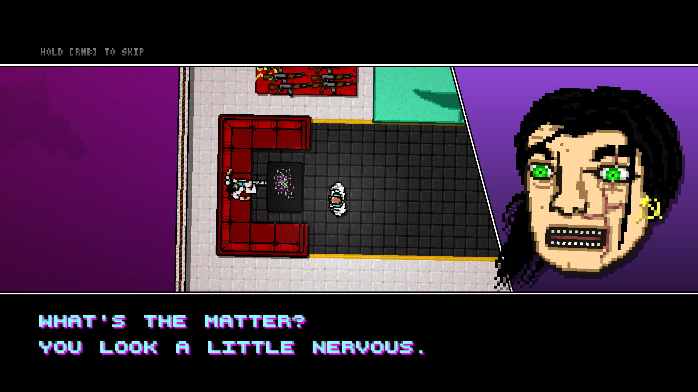
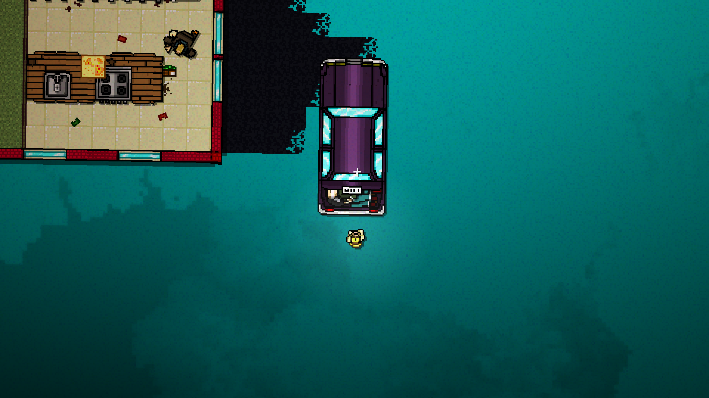

The Way Home：从《迈阿密热线》两部曲浅谈美式虚无主义
引入
说到像素艺术，可能大部分人的印象停留在FC红白机时代。受限于8位机的性能限制，非常有限的简单色彩像素点阵表示2D图形成为了像素艺术的名片。随着计算机性能的飞跃和计算机图形学的拓展，从8位机到16位机，再到现在普及的64位机，游戏世界的图形越来越逼真，甚至有时能够以假乱真。你也很难看到现在有游戏公司特地去开发一款像素风格的游戏了。
不过你在几年前或许玩过一款叫作《挺进地牢（Enter The Gungeon）》的优秀平面射击像素风游戏，或者是玩过姊妹篇《逃出地牢（Exit The Gungeon）》。虽然已经不是像素的年代，但这两部作品不管是在游戏性还是声画表现上都足以称得上是像素艺术的典范。这两款游戏由Devolver Digital发行。也许对于大家来说，这个名字或许有些陌生。但在业界，Devolver Digital可以说是优秀小品游戏第一线制作公司，旗下的像素游戏精品不断。当然Devolver Digital并不只发行像素游戏，也许你觉得很好玩的一款小品就是Devolver Digital发行的。
Devolver Digital于2012年10月23日在美国发行了《迈阿密热线（Hotline Miami）》——也就是今天我们的主角。这款游戏和它的续作《迈阿密热线2：空号（Hotline Miami 2: Wrong Number）》成为了Devolver Digital在公司成立早期的金字招牌——限制级像素风格游戏。凭借着独特的限制级像素风格，独特的电子合成音乐，再搭配上“离奇”的游戏剧情，《迈阿密热线》两部曲在游戏外史中可算是占有一席之地。不过今天我们讨论的不是游戏本身，而是两部曲中游戏剧情所映射的美式虚无主义思想。
剧情梳理
如果你只玩过两部曲中的第一代，那么对剧情不知所云是十分正常的。一代中谜语重重，交代甚少，很难让人明白到底发生了什么，只能凭借本能去控制带着鸡头面具的主角闯入一栋又一栋展开屠杀。其实游戏的大部分剧情是在二代补完的，但基于二代采用回转磁带式的时间线叙事，如果不认真理清思路，恐怕玩家也很难玩明白，迷失在混乱的时间线和复杂的人物线中。
以下是我自己结合论坛里一些玩家的结论总结和推断出来的大致剧情，如有错误，烦请谅解。
游戏中的世界观
1986年4月3日，美苏第一次战争（夏威夷战争）以苏联在美国本土旧金山进行核战术打击而告终。双方签订条约，战争结束。
在第二次世界大战中，首先拥有核武器的苏联人迅速封锁了核技术。在冷战开启后，苏联凭借着雄厚的工业基础和强大的国家意志占据了绝对优势。而此时的美国国内爆发了民粹主义思想，阶级仇视和民族仇视十分尖锐。在内外交困的情况下，虚弱的美国政府被迫抵抗苏联人在夏威夷发起的战争攻势。
鬼狼小队与50BLESsings
在劣势难以挽回之际，特别行动小队——鬼狼小队在上校的领导下对苏军在夏威夷的军事基地发动了最后的破坏式袭击。上校对政府的软弱无能怀恨在心，于是在本土多个城市内成立了组织50BLESsings。副官，夹克男理查德（Richard），黑人小哥和蒙面胖子是鬼狼小队的成员。
猪头面具男 马丁·布朗
在国内反苏情绪高涨之际，有人以近期火爆头条的屠杀苏联人的鸡头男为原型拍摄了电影，猪头男担任主角。然而妖魔化的民族情绪和藏匿在本能中的杀戮欲望让他迟迟陷入自己的剧本中，他并没有意识到自己正闯入一栋又一栋公寓里进行屠杀。最终当子弹射入脑袋那一刻，他才发现眼前的灯光、摄像机和群众演员都已不存在，所有的一切都是他臆想出来的。
鼠头面具男 里克特
里克特某天接到了一个奇怪的电话，电话那头要求他去血洗某所公寓，他并没有当一回事。但第二天他发现自己的车被人烧了，他才意识到事情的严重性。于是他也开始为这个奇怪的电话背后的组织——50BLESsings工作，否则他和他唯一的亲人——他的母亲将会有生命危险。
此时的鸡头男理查德已经是名人了，在一次袭击中他顺手救出一个女性并安置在自己家里。两人感情日益升温，被仇恨蒙蔽双眼的理查德开始看到曙光。然而50BLESsings得知此事后，担心理查德会因为此事而失去了对苏联人的仇恨，不再为组织工作。于是他们派遣鼠头男刺杀理查德的女友，不料正好撞见回来的理查德。鼠头男一枪击晕了理查德，逃跑了。
理查德在医院中醒来，由于他与数不胜数的屠杀案有着关系，被警察看守着。理查德想尽办法逃出了医院，找到了鼠头男并把他掐死了。理查德决定要斩草除根，随即袭击警署，找到资料得知了迈阿密最大的苏联帮派地址，于是独自前往，最后在阳台上枪杀了帮派的教父级人物。理查德最后点了根烟，掏出那张照片，让它随风飘去。
然而理查德并不知道，鼠头男里克特并没有被他完全掐死。
头盔男
头盔男也是为50BLESsings工作的一员，但他和鼠头男里克特一样，对组织的底细并不清楚。但他十分享受由杀戮带来的快感，但很快他对这项工作本身产生了怀疑。在一次偶然的机会中，头盔男发现了组织的重要地点信息——一家中餐馆。发现此事的50BLESsings随即派遣鸡头男理查德刺杀了正在苏联人公寓屠杀的头盔男。
动物五人组
警探帕尔多
帕尔多是迈阿密警署的一位警探，性格十分特立独行，但同事们都很尊重他。不过帕尔多是一个名副其实的双重人格患者，在侦查过程中，如果遇到阻碍，他总是会屠杀掉当场的所有人，并在同事们赶到现场时亮出警官证，无辜地表示：“这里刚刚发生了一桩大案子，我已经拿到一些物证了，说实话有些时候这座城市真的很让人无语……”
这样的双重人格让帕尔多明白，如果不尽快找个替罪羊，海量的证据在等着他。于是他借以调查五人组犯下的案子为由，来到天鹅面具姐弟家中。奈何天鹅姐弟中的姐姐艾莉克斯经验丰富，发现了帕尔多车上被绑着的苏联帮派成员，周旋着让帕尔多的嫁祸计划破产了。
但双重人格让帕尔多并没有对嫁祸计划的破产感到失望。一天帕尔多在家中整理东西时发现自己的配枪不见了，惊慌地返回昨天他调查的凶杀现场，然而那个死掉的被害者居然活着，并且手里还拿着他的配枪。
很明显，是帕尔多杀了被害者，但他自己并不知道。转场来到警署，署长正在质问帕尔多众多屠杀案中有关于他的线索，帕尔多知道事情败露，于是血洗警署，但最后逃出警署时被特警围攻击毙了。
帕尔多死了吗？不他并没有死，找枪和血洗警署只是他做的一个梦。他的另一个人格不断渴求有人能够前来逮捕他，揭发他的罪行。帕尔多警探一直在杀戮的快感和自责的边缘中寻找着渺茫的平衡。
作家埃文
自从夏威夷采访回国后，埃文再也没动过笔。当鸡头男的事迹开始爆红之际，埃文看到了非常有意思的东西，想通过记录国内这场前所未有的民粹主义浪潮写一本书。埃文似乎手里握着警探帕尔多的某个把柄，一次又一次通过帕尔多的帮助了解了苏联帮派等组织和事情的内幕。一次偶然的机会他联系上了鼠头男里克特，希望里克特能把他所知的东西告诉他。此时的里克特刚刚从鸡头男理查德的死亡之手中逃出，他向埃文提出用两张能够带走他和他母亲远离的机票作为交换。埃文爽快地答应了，于是鼠头男将“迈阿密热线”告诉了埃文。
太子

自父亲死于鸡头男理查德之手后，太子凭借着毒辣的手段坐上了帮派头把交椅。在这个过程中有哥伦比亚帮派趁虚占领了这个苏联帮派的毒品生意。太子很是气愤，亲自下场收拾了哥伦比亚帮派。不过太子自己也是个瘾君子，在袭击哥伦比亚帮派过程中，他在幻觉中看到了父亲和父亲的保镖，父亲肯定了太子的作为，认为太子能够撑起家业。
在成功教训了哥伦比亚帮派后，太子沉迷于新型产品。手下劝他不要摄入太多，结果太子没有听进去，进入了一个前所未有的幻觉场景。在这个场景中，他成功屠杀了自己身边的手下，并刺杀了前来踢馆的五人组。在最后杀掉天鹅姐弟后，太子眼前出现了一条彩虹大道。太子感叹道：“这就是我一直追寻的东西啊！”于是自认为天下无敌的太子踩上了彩虹大道，最后摔死在大街上，由帕尔多为他收尸。
副手
副手是自太子父亲在位时就为帮派尽心尽力的元老级人物。当帮助太子登上帮派头椅之后，他想退出帮派过自己的小生活。太子很爽快地答应了他，让他干最后一票之后就可以回去了。于是副手袭击了哥伦比亚帮派的一个会所，并且找到了一大包美金。副手兴高采烈地驱车回家。结果第二天醒来发现女友和钱都不见了。女友的桌上还留着一张字条：“亲爱的，如果你是我，我相信你也会做出同样的选择的。”副手被女友抛弃了，他开着车，一次又一次拨打女友的电话，那头始终传来“Wrong Number”的回应。最后这个不断摄入着产品，死前一直念叨着他女友的名字的副手，死于前来夜总会屠杀的五人组手中。
结局
1991年12月28日，埃文的书成功出版，埃文本人被电视台采访。鼠头男里克特和母亲在某处的海滩上晒着太阳，看着埃文出版的书。警探帕尔多则坐在一个房间里的地上摆弄着那把配枪。而“名人”鸡头男理查德最终锒铛入狱。就在这时，收音机里传来紧急插播。
50BLESsings成功同时刺杀了美苏两国最高领导人，引发了苏联方面的强烈震动。
苏联人立刻在古巴基地对迈阿密进行了核战术打击。
一切事物都在一瞬间湮灭。
美式虚无主义
正如前文所说，如果不认真理清游戏的时间线和人物线，玩家很难明白整个游戏在讲述一个怎样的故事。因为开发者似乎想通过游戏独特的叙事方式去深刻展现“虚无主义”这一主题。实际上很多玩家或许会认为这款游戏的主题是“反战反暴力”，一切起于战争，最后终于战争，时刻充斥着血腥与暴力。但我认同开发者的“虚无主义”主题观点。那么两部曲是怎么体现这一主题的呢？
首先，游戏在叙事方面就有所体现。在一代，游戏是线性叙事，围绕鸡头男理查德一个人从开始为50BLESsings工作到成功刺杀苏联帮派老头目的历程展开。游戏中莫名奇妙的“热线电话”，每一关结束时看到的同一个店员，游戏似乎只告诉你：“玩就行了，管那么多干嘛。”但是随着游戏深入，你会发现主角身边事物的变化，这正是引导你思考意义——这一虚无主义研究课题——的开端。
在二代，游戏叙事变成了电影磁带回转式叙事，时间线和人物线完全打乱，仿佛告诉玩家：“知道有这件事就行了。”类似的手法，刺激着玩家自己去整理思路，了解来龙去脉，思考意义价值。
其次，游戏在游戏机制强调着虚无主义。游戏的基本机制就是依靠各种方式屠杀，不管你是空手，还是手持冷兵器，或是拿上霰弹枪喷人，只要你能完美屠杀，就算成功。虚无主义不强调过程，它强调的是结果的意义。
再者，游戏在美术设计上强调这虚无主义。尽管采用了像素风格，但开发者尽力地用像素点将游戏血腥暴力的一面完美展示出来。因而你常常能在游戏里看到滚落的人头、血流的碎尸等等。但对比血腥画面的精细，游戏对于场景的刻画显得有点力不从心。尽管是在二代建筑内场景得到大大丰富，但对比起来还是相对空旷、单一很多。色块大胆采用深紫色基色，使得美术画面格外魔幻，仿佛就再告诉你：这是个磕了药才看得到的画面。
最后，游戏在音乐创作上独具虚无主义色彩。尽管两部曲的BGM都是从各个独立音乐制作人独自创作的电子音乐合集而来，内容与游戏没有太大关系，但其魔幻的旋律、激烈的电子碰撞音，让人感觉身处嗑药夜总会，屠杀获取快乐就好。
虚无主义本身就有很丰富的内容和流派。对于虚无主义或许人人皆知，但对于美式虚无主义的特点内容可能少有人知。中国道家思想中“大道无为”即有浓厚的虚无主义色彩。它认为真正的“道”，是不需要刻意去做什么事来实现的，一切都需要遵循自然的法则。而美式虚无主义则强调一个人需要通过自身刻意寻找意义，寻不到意义的才能是虚无。

猪头男曲终梦醒，醒来时子弹已经夺走性命。
鼠头男命悬一线，最后带着母亲隐居一处。
头盔男意见天机，未曾想被反将一军。
帕尔多自我矛盾，痛苦挣扎永无止境。
太子自我膨胀，以为天下无敌却死于己手。
副手脱离苦海，随即溺于爱河苦等空号（Wrong Number）。
即便是迈阿密这座繁华都市，最终也免不了核战术打击夷为平地，遭遇和旧金山一样的命运。
有意思的是，在二代被打乱的时间线中，游戏中后期部分则是回顾了一切的最开始——鬼狼小队在夏威夷。在副官拿起霰弹枪，跨入苏军基地外围，BGM响起的那一刻，我明白了这部作品的虚无主义意义何在。
The Way Home
上校说，小伙子们，做完这最后一个任务，你们就能回家了。
在那时，四人钻在一起，畅谈着回家后的人生规划。
黑人小哥想开一家酒吧，蒙面胖子想当一名教师，副官想开一家便利店。
这一切都印在了理查德脑海中。
即便是理查德在迈阿密为组织工作、神志不清的那段时间，
理查德始终坚持去酒吧、录像店和便利店，
每一次看到的店员，
都是那个死于旧金山的那位副官。
我们的意义，也许是虚无的。
但它总能在回家的路上变得渐渐清晰起来。